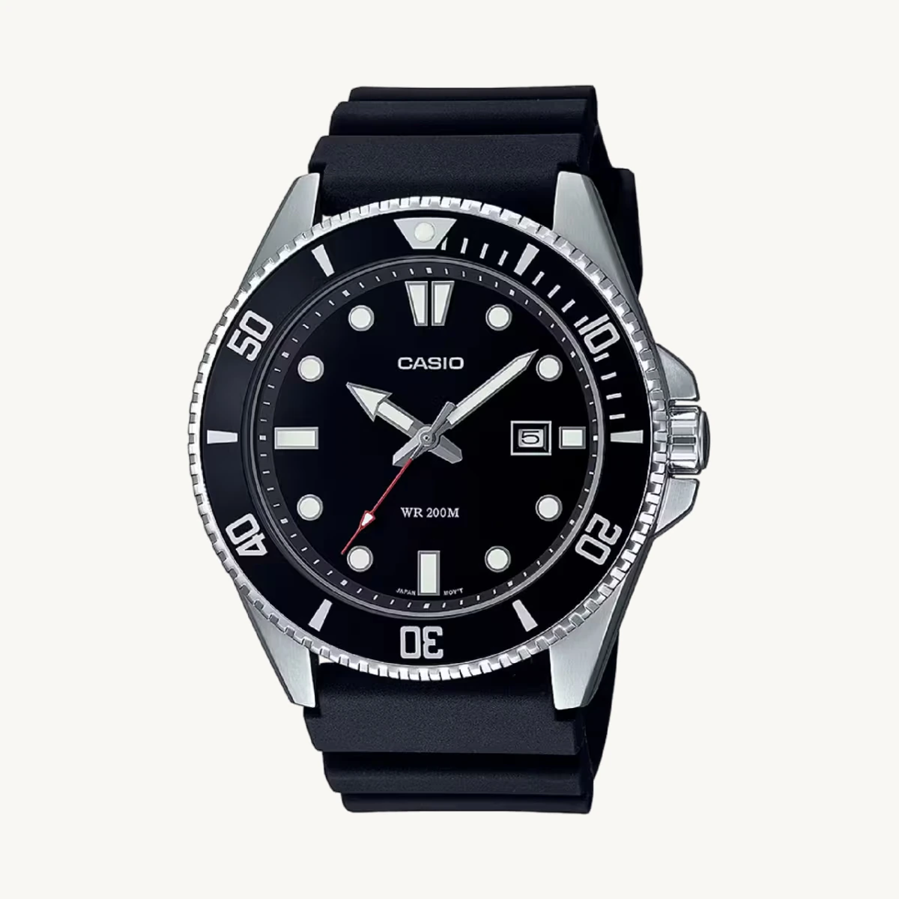
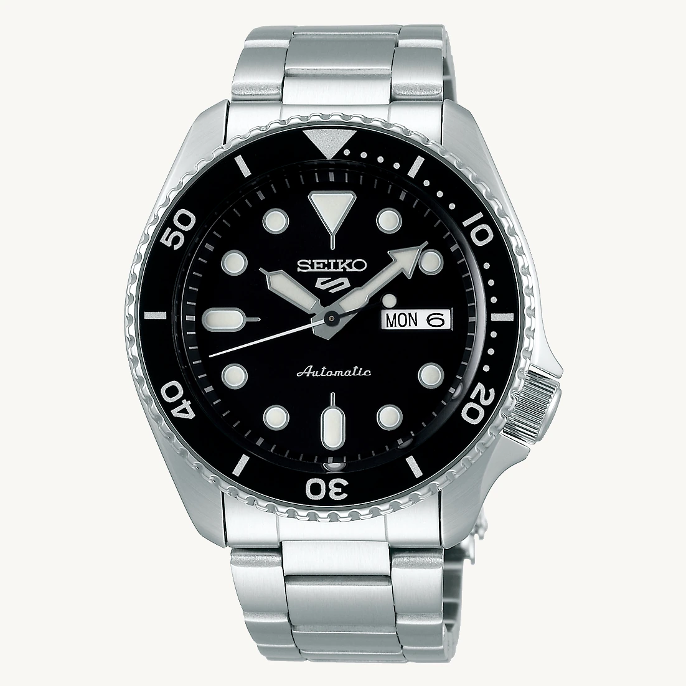

La sélection Atelier Montres
Trouvez la montre
qui vous ressemble.
Classique, sportive ou contemporaine : explorez 52 montres, comparez les modèles et trouvez celle qui correspond à votre style.
Choix et informations sur Atelier Montres. Achat, paiement et livraison chez le vendeur.
 CITIZEN / TSUYOSAVoir la montre
CITIZEN / TSUYOSAVoir la montre
52 référencesPour différents styles et budgets
Des fiches détailléesPhotos, mouvements et dimensions connues
Des liens utilesRetrouvez les modèles chez leurs vendeurs
Notre sélection
Trois montres, trois personnalités.
Contemporaine · Automatique
Citizen Tsuyosa
Un cadran affirmé et une silhouette épurée.
Découvrir ce modèle
Polyvalente · Automatique
Seiko 5 Sports
Une allure sportive et des détails horlogers soignés.
Découvrir ce modèleLes photographies sont associées aux références présentées. Les prix, stocks et variantes sont à vérifier chez le vendeur avant tout achat.
Un choix plus simple
Commencez par vos envies.
Pas besoin de connaître tous les mouvements ou toutes les références pour trouver votre style.
Notre approche
Choisir avec les bonnes informations.
Une montre se choisit autant pour son esthétique que pour son mouvement, ses dimensions et son usage. Nous réunissons ces informations quand elles sont disponibles, et signalons les caractéristiques qui restent à confirmer.
Découvrir nos comparatifsQuestions fréquentes
Avant de choisir.
Comment acheter une montre présentée ici ?
Ouvrez la fiche du modèle, puis consultez le lien vers le vendeur lorsqu'il existe. Le règlement, les frais de livraison et les retours dépendent du marchand. Atelier Montres ne prélève aucun paiement sur ce parcours.
Les montres sont-elles en stock ?
Nous présentons des références de montres, pas un stock en temps réel. Vérifiez auprès du vendeur la disponibilité, la couleur, le prix final et le délai de livraison.
Comment trouver la bonne taille de boîtier ?
Notre conseiller de montres permet de filtrer selon la taille, le mouvement et votre style. Les dimensions absentes des sources ne sont pas inventées.
Les liens vers les vendeurs sont-ils rémunérés ?
Certains liens, notamment vers Amazon.fr, sont des liens d'affiliation signalés. Cela ne change pas votre prix. En tant que Partenaire Amazon, je réalise un bénéfice sur les achats remplissant les conditions requises.
À vous de choisir